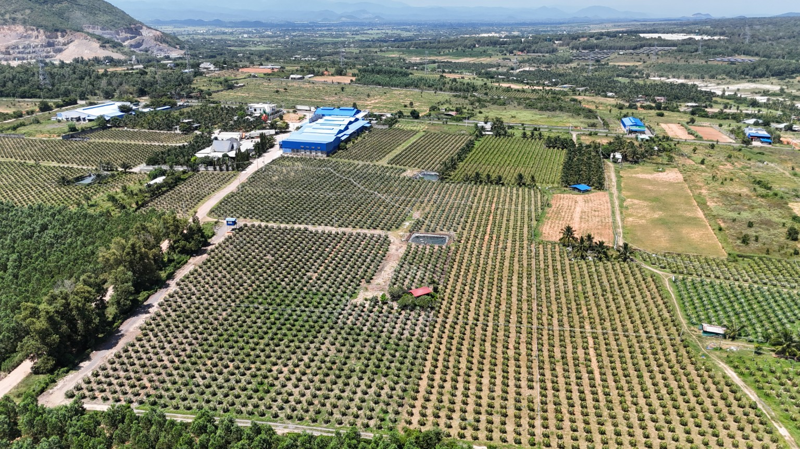
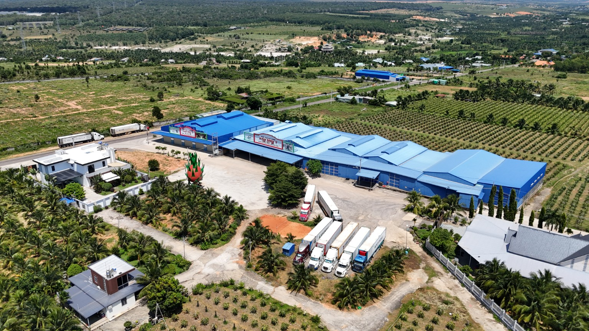
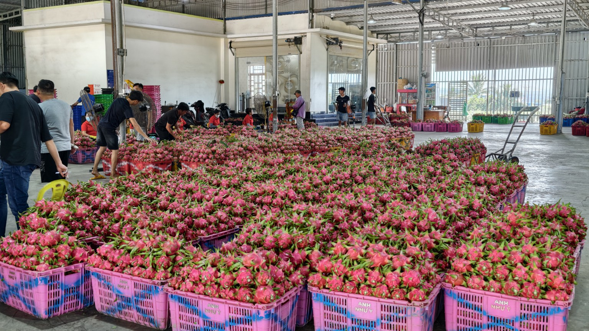
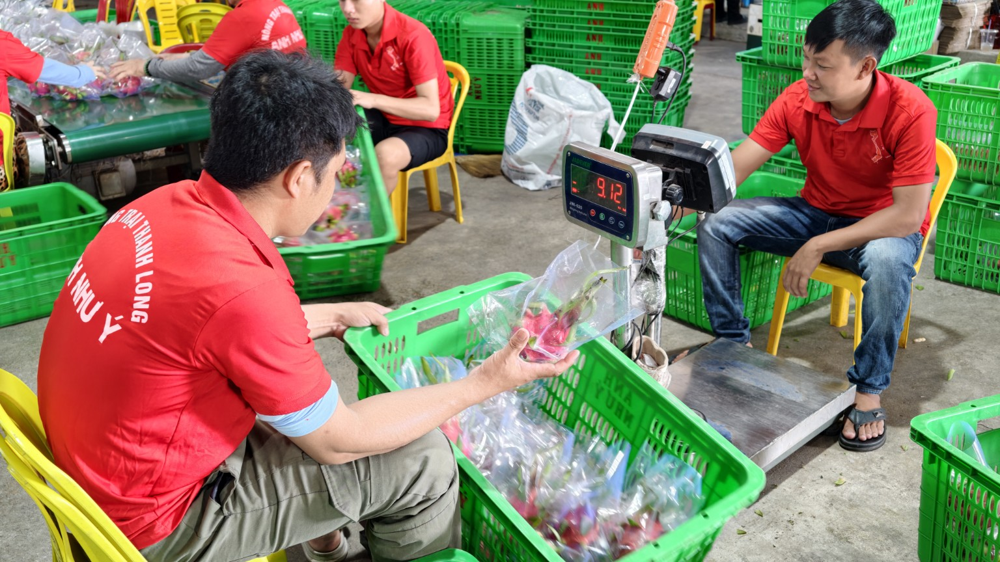
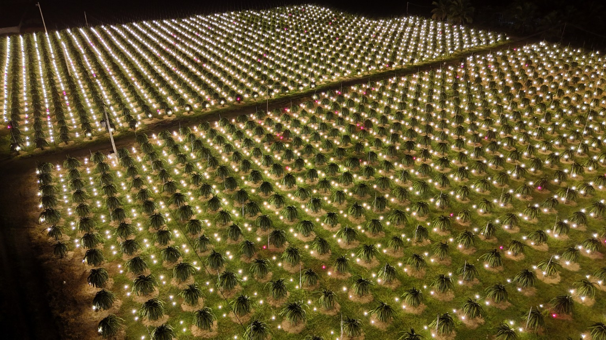
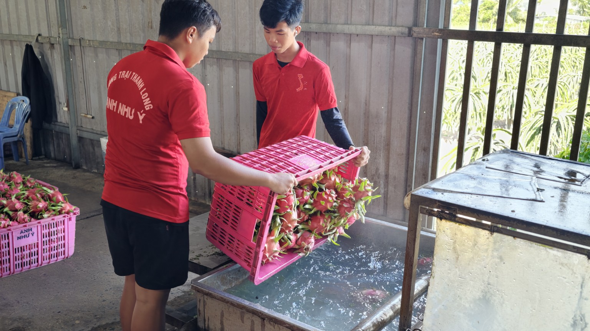

01 / FARM
Từ vùng trồng
Hình ảnh vườn thanh long và hoạt động chăm sóc cây.

Vựa thanh long Anh Như Ý — nơi những trái thanh long được tiếp nhận, tuyển chọn và chuẩn bị với sự tận tâm của đội ngũ tại cơ sở.
Từ vùng trồng thanh long đến khu vực tiếp nhận và sơ chế, chúng tôi ghi nhận từng công đoạn bằng chính hình ảnh hoạt động tại cơ sở. Đó là cách Anh Như Ý giới thiệu con người, quy trình và tinh thần làm việc của mình.

Khám phá những hình ảnh thực tế từ vùng trồng đến công việc tại vựa — các công đoạn được trình bày minh bạch, gần gũi và chân thực.

Hình ảnh vườn thanh long và hoạt động chăm sóc cây.
Đội ngũ làm việc trực tiếp với sản phẩm tại khu vực sơ chế.

Các hoạt động chuẩn bị sản phẩm trước khi vận chuyển.


Đằng sau mỗi lô hàng là công sức của đội ngũ tại vựa: tiếp nhận, xử lý, lựa chọn và chuẩn bị sản phẩm. Chúng tôi trân trọng từng công đoạn và những người làm nên hành trình ấy.
Một góc nhìn chân thực về vùng trồng, sản phẩm và những con người tại Anh Như Ý.